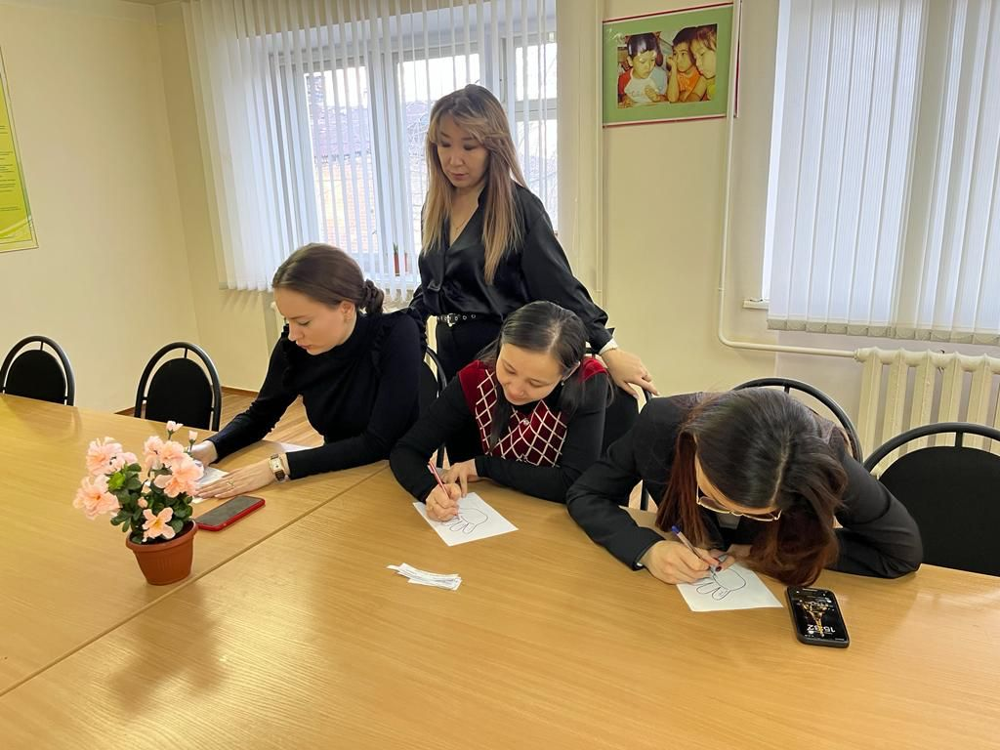

2021-2023 жылдары іске асырылды:
Білім алушылар мен оқытушыларға алғыс хаттар, ЖОО үлгісіндегі қатысушы сертификаттарын бере отырып, бірқатар оқыту семинарлары, тренингтер, шеберлік сыныптары мен дөңгелек үстелдер өткізілді:
Семинарлар:
- семинар «Генезис социальной ответственности в современном мире» для ППС, 01.07.2022г.,
- «Опыт проведения научных исследований в современном университете» әдістемелік семинары, 29.03.2023,
Тренингтер:
Мастер-класс және тренингтер:
Растайтын құжаттар: бағдарламалар, сертификаттар, алғыс хаттар, шақырулар, фотосуреттер.
За 2021-2023 годы было реализовано:
Проведены ряд обучающих семинаров, тренингов, мастер-классов и круглых столов для обучающихся и преподавателей с выдачей Благодарственных писем, сертификатов участника вузовского образца:
Семинары:
- семинар «Генезис социальной ответственности в современном мире» для ППС, 01.07.2022г.,
- методический семинар «Опыт проведения научных исследований в современном университете», 29.03.2023,
Тренинги:
- тренинг «Я – ответственный за свою жизнь!» для ППС и обучающихся, 01.07.2022г.,
- тренинг «Я – ЭТО ЗНАЧИТ МЫ!» для обучающихся, 17.05.2023г.
Мастер-класс и тренинги:
Подтверждающие документы: программы, сертификаты, Благодарственные письма, приглашения, фотографии.
For 2021-2023, the following was implemented:
Conducted a number of training seminars, trainings, master classes and round tables for students and teachers with the issuance of letters of thanks, certificates of participation of the university model:
Workshop:
Trainings:
Master class and trainings:
Supporting documents: programs, certificates, letters of thanks, invitations, photographs.
«Социальная ответственность — залог успешной самореализации личности!»
2022 жылдың 1 шілдесінде психология кафедрасында “Генезис социальной ответственности в современном мире” тақырыбында оқыту семинары және “Я – ответственный за свою жизнь!”, Марат Оспанов атындағы БҚМУ-нің 65 жылдық мерейтойын мерекелеуге орайластырылған оқытушылар мен білім алушылар үшін “Социальная ответственность залог успешной самореализации личности”.
«Социальная ответственность — залог успешной самореализации личности!»
1 июля 2022 году на кафедре психологии прошел обучающий семинар на тему «Генезис социальной ответственности в современном мире» и два тренинга «Я – ответственный за свою жизнь!», «Социальная ответственность залог успешной самореализации личности» для преподавателей и обучающихся, приуроченный к празднованию 65-летнего юбилея ЗКМУ имени Марата Оспанова.
«SOCIAL RESPONSIBILITY IS A KEY TO SUCCESSFUL SELF-REALIZATION OF A PERSON!»
On July 1, 2022, a training seminar was held at the Department of Psychology on the topic “The Genesis of Social Responsibility in the Modern World” and two trainings “I am responsible for my life!”, “Social responsibility is the key to successful self-realization of the individual” for teachers and students, dedicated to the celebration of 65- summer anniversary of WKMU named after Marat Ospanov.

Аталған іс-шаралар Қазақстан Республикасы Білім және ғылым министрлігінің Ғылым комитеті қаржыландыратын (2021-2023 жж.) және Марат Оспанов атындағы БҚМУ психология кафедрасында жүзеге асырылатын ЖТН АР09058126 “Батыс Қазақстанның жоғары оқу орындарындағы кәсіптік даярлық жағдайындағы білім алушылардың әлеуметтік жауапкершілігі” ғылыми-техникалық жобасы шеңберінде 2022 жылға арналған күнтізбелік жоспарға сәйкес өткізілді.
Данные мероприятия проводились согласно календарному плану на 2022г. в рамках научно-технического проекта «Социальная ответственность обучающихся в условиях профессиональной подготовки в вузах Западного Казахстана» ИРН AP09058126, финансируемого Комитетом науки Министерства образования и науки Республики Казахстан (2021-2023 гг.) и реализуемого на кафедре психологии ЗКМУ имени Марата Оспанова.
These activities were carried out according to the calendar plan for 2022. within the framework of the scientific and technical project “Social responsibility of students in the conditions of professional training in universities of Western Kazakhstan” IRN AP09058126, funded by the Science Committee of the Ministry of Education and Science of the Republic of Kazakhstan (2021-2023) and implemented at the Department of Psychology of WKMU named after Marat Ospanov.

Семинар мен тренингтерді зерттеу тобының мүшелері өткізді: М.М. Книсарина, Г.С. Жұмалиева, А.М. Мақашева.
Шақырылған спикерлер: Мацюк Дмитрий Анатольевич, ф.ғ.к., Қ.Жұбанов атындағы АӨУ Қазақстан халқы Ассамблеясы кафедрасының доценті; Сейтенова Салима Сагиновна, п.ғ.к., қауымдастырылған профессор, Баишев атындағы университеттің “Педагогика, психология және пәндік технологиялар” кафедрасының жетекшісі; Нұрғалиев Нұрбек Әбибуллаұлы, ф.ғ.к., Қ.Жұбанов атындағы АӨУ Қазақстан халқы Ассамблеясы кафедрасының аға оқытушысы; Самат Самидуллаұлы Құмыспаев, философия ғылымдарының магистрі, Марат Оспанов атындағы БҚМУ қоғамдық-гуманитарлық ғылымдар кафедрасының аға оқытушысы; Шалманова Әлия Бакитжанқызы, гуманитарлық ғылымдар магистрі, Ақтөбе облыстық тарихи-өлкетану мұражайының ғылыми қызметкері.
Семинар и тренинги проводили члены исследовательской команды: Книсарина М.М., Жумалиева Г.С., Макашева А.М.
В качестве приглашенных спикеров выступили: Мацюк Дмитрий Анатольевич, к.ф.н., доцент кафедры Ассамблеи народа Казахстана АРУ имени К.Жубанова; Сейтенова Салима Сагиновна, к.п.н., ассоциированный профессор, руководитель кафедры «Педагогика, психология и предметные технологии» университета им.Баишева; Нургалиев Нурбек Абибуллаевич, к.ф.н., ст. преподаватель кафедры Ассамблеи народа Казахстана АРУ имени К.Жубанова; Кумыспаев Самат Самидуллаевич, магистр философских наук, ст. преподаватель кафедры общественно-гуманитарных наук ЗКМУ имени Марата Оспанова; Шалманова Алия Бакитжановна, магистр гуманитарных наук, научный сотрудник Актюбинского областного историко-краеведческого музея.
The seminar and trainings were conducted by members of the research team – M. Knissarina, G. Zhumaliyeva, A. Makasheva.
The invited speakers were: Matsyuk D. – associate Professor of the Department of the Assembly of the People of Kazakhstan, Aktobe Regional University named after K. Zhubanov. Seitenova S. – associate professor, head of the department “Pedagogy, psychology and subject technologies”, Baishev University. Nurgaliyev N.- Candidate of Philosophy, Senior Lecturer of the Department of the Assembly of the People of Kazakhstan, Aktobe Regional University named after K. Zhubanov. Kumyspaiyev S. – Master of Philosophy, Senior Lecturer, Department of Social Sciences and Humanities of WKMU named after Marat Ospanov. Shalmanova A.- Master of Arts, researcher of the Aktobe Regional Museum of History and Local Lore.

Философия, әлеуметтану, саясаттану және педагогика тұрғысынан тұлғаның әлеуметтік жауапкершілігінің генезисі мәселелері талқыланды. Кездейсоқ қызу әңгімеде білім беру жүйесіндегі әлеуметтік жауапкершіліктің ерекшеліктері ашылды
Были обсуждены вопросы генезиса социальной ответственности личности с точки зрения философии, социологии, политологии и педагогики. В непринужденной оживленной беседе были раскрыты особенности социальной ответственности в системе образования.
В знак благодарности за неравнодушие и желание оказать профессиональную помощь в проведении семинара, который прошел на высоком уровне, всем гостям были вручены Благодарственные письма.
Questions of the genesis of the social responsibility of the individual from the point of view of philosophy, sociology, political science and pedagogy were discussed. In a relaxed lively conversation, the features of social responsibility in the education system were revealed.
As a token of gratitude for the indifference and desire to provide professional assistance in holding the seminar at a high level, all guests were presented with Letters of Appreciation.
СОЦИАЛЬНАЯ ОТВЕТСТВЕННОСТЬ МОЛОДЕЖИ: БУДУЩЕЕ НАЧИНАЕТСЯ С ИДЕИ!
Марат Оспанов атындағы БҚМУ психология кафедрасында 08.07.2022 ж. "Методологические основы формирования социальной ответственности у обучающихся в системе высшего образования" атты халықаралық қатысумен, білім алушылар мен оқытушылар үшін алғыс хаттар, ЖОО үлгісіндегі қатысушы сертификаттарын бере отырып, оқыту семинары өткізілді.
СОЦИАЛЬНАЯ ОТВЕТСТВЕННОСТЬ МОЛОДЕЖИ: БУДУЩЕЕ НАЧИНАЕТСЯ С ИДЕИ!
На кафедре психологии ЗКМУ имени Марата Оспанова 08.07.2022г. был проведен обучающий семинар с международным участием «Методологические основы формирования социальной ответственности у обучающихся в системе высшего образования», для обучающихся и преподавателей с выдачей Благодарственных писем, сертификатов участника вузовского образца.
Methodological foundations for the formation of social responsibility among students in the higher education system!
At the Department of Psychology of Marat Ospanov WKMU on 07/08/2022. a training seminar with international participation "Methodological foundations for the formation of social responsibility among students in the higher education system" was held for students and teachers with the issuance of letters of thanks, university participant certificates.
ӘЛЕУМЕТТІК ЖАУАПКЕРШІЛІКТІ ҚАЛЫПТАСТЫРУ БІЛІМ БЕРУ ЖӘНЕ МЕДИЦИНАЛЫҚ ҰЙЫМДАР ҚЫЗМЕТКЕРЛЕРІНІҢ СТРЕССКЕ ТӨЗІМДІЛІГІ МЕН ТӨЗІМДІЛІГІН АРТТЫРУ НЕГІЗІНДЕ
2022 жылғы 5 қазанда Марат Оспанов атындағы БҚМУ-нің 65 жылдық мерейтойын мерекелеу қарсаңында психология кафедрасы барлық тілек білдірген оқытушылар, мұғалімдер, білім алушылар үшін халықаралық қатысумен "Формирование социальной ответственности на основе повышения стрессоустойчивости и резильентности персонала образовательных и медицинских организаций" тақырыбында оқыту семинарын (вебинар) ұйымдастырды және өткізді. Іс-шара Қазақстан Республикасы Білім және ғылым министрлігі Ғылым комитетінің грантымен қаржыландырылатын ЖТН АР09058126 “Батыс Қазақстанның жоғары оқу орындарындағы кәсіптік даярлық жағдайындағы білім алушылардың әлеуметтік жауапкершілігі” ғылыми жобасы шеңберінде жоспарланған.
ФОРМИРОВАНИЕ СОЦИАЛЬНОЙ ОТВЕТСТВЕННОСТИ НА ОСНОВЕ ПОВЫШЕНИЯ СТРЕССОУСТОЙЧИВОСТИ И РЕЗИЛЬЕНТНОСТИ ПЕРСОНАЛА ОБРАЗОВАТЕЛЬНЫХ И МЕДИЦИНСКИХ ОРГАНИЗАЦИЙ
5 октября 2022г. В преддверии празднования 65-летнего юбилея ЗКМУ им. Марата Оспанова кафедра психологии организовал и провел обучающий семинар (вебинар) на тему «Формирование социальной ответственности на основе повышения стрессоустойчивости и резильентности персонала образовательных и медицинских организаций» с международным участием для всех желающих преподавателей, учителей, обучающихся. Мероприятие запланировано в рамках научного проекта «Социальная ответственность обучающихся в условиях профессиональной подготовки в вузах Западного Казахстана» (ИРН № АР09058126), финансируемого грантом Комитета науки Министерства образования и науки Республики Казахстан.
FORMING SOCIAL RESPONSIBILITY BASED ON INCREASING RESISTANCE AND RESISTANCE OF STAFF OF EDUCATIONAL AND MEDICAL ORGANIZATIONS
October 5, 2022 on the eve of the celebration of the 65th anniversary of the ZKMU named after Marat Ospanov, the Department of Psychology organized and training seminar (webinar) on the topic "Formation of social responsibility based on increasing the stress resistance and resilience of the personnel of educational and medical organizations" with international participation for all teachers, teachers and other workers in the medical and educational sphere. The event was held according to the calendar plan within the framework of the scientific project "Social responsibility of students in the conditions of professional training in universities of Western Kazakhstan" (IRN No. АР09058126), funded by a grant from the Science Committee of the Ministry of Education and Science of the Republic of Kazakhstan.
Қазақстанның түрлі қалаларының әр түрлі университеттері мен басқа да білім беру ұйымдарының өкілдері болып табылатын семинар спикерлері (Сыздықбаева Айгүл Жұманазарқызы, PhD, Педагогика және психология институтының қауымдастырылған профессоры, ҚазҰҚПУ Алматы; Жексенова Ажар Николаевна, м. ғ. к., Марат Оспанов атындағы БҚМУ патфизиология кафедрасының жетекшісі) және басқа елдер (Гарбер Алена Ильинична (Dr. Alena Garber), PhD, қау.профессор, "Reinhardshöhe" реалибитациялық клиникасының психологы, Гессен, Германия; Тенеряднова Светлана Павловна, п.ғ. к., каф доценті. М. А. Бонч-Бруевич атындағы шет және орыс тілдерін профессоры , Санкт-Петербург, Ресей; Сирожиддинова Зухра Мукарамовна, к. пс.н., медициналық-педагогикалық, емдік және халықтық медицина деканының орынбасары, аға оқытушы. Ташгосми, Ташкент, Өзбекстан).
Удивляет прекрасный состав спикеров семинара, являющихся представителями разных университетов и других образовательных организаций разных городов Казахстана (Сыздыкбаева Айгуль Джуманазаровна, PhD, асс.профессор института педагогики и психологии КазНацЖенПУ, Алматы; Жексенова Ажар Николаевна, к.м.н., рук.каф. патфизиологии ЗКМУ им. Марата Оспанова, Актобе) и других стран (Гарбер Алена Ильинична (Dr. Alena Garber), PhD, асс.профессор, психолог реалибитационной клиники „Reinhardshöhe“, Гессен, Германия; Тенеряднова Светлана Павловна, к.п.н., доцент каф. иностранных и русского языков СПбГУТ им. проф. М.А.Бонч-Бруевича, Санкт-Петербург, Россия; Сирожиддинова Зухра Мукарамовна, к.пс.н., заместитель декана медико-педагогической, лечебной и народной медицины, ст.преподаватель каф. ТашГСИ, Ташкент, Узбекистан).
The excellent composition of the seminar speakers, who are representatives of different universities and other educational organizations from different cities of Kazakhstan, is surprising (Syzdykbaiyeva Aigul, PhD, Associate Professor of the Institute of Pedagogy and Psychology of Kazakh National Women's Teacher Training University, Almaty; Zheksenova Azhar, Candidate of Medical Sciences, Head of Department. pathphysiology of Marat Ospanov WKMU, Aktobe) and other countries (Garber Alena (Dr. Alena Garber), PhD, Associate Professor, psychologist of the rehabilitation clinic "Reinhardshöhe", Hesse, Germany; Teneriyadnova Svetlana, Ph.D. , Associate Professor of the Department of Foreign and Russian Languages, St. Petersburg State University of Technology named after Prof. M.A. Bonch-Bruevich, St. Petersburg, Russia; Sirojiddinova Zukhra, Ph.D. teacher of the department of Tashkent State Institute of Civil Engineering, Tashkent, Uzbekistan).
Қонақтар ретінде жетекші профессорлар, мектеп директорлары мен Ақтөбе, Алматы, Ақтау педагогтары шақырылды:
Туребаева Клара Жаманбайқызы, педагогика ғылымдарының докторы, Қ. Жұбанов атындағы Ақтөбе өңірлік университетінің психологиялық-педагогикалық және арнайы білім беру кафедрасының жетекшісі, Ақтөбе, ҚР;
Бақтиярова Гүлшат Рахмеджанқызы, педагогика ғылымдарының кандидаты, Қ. Жұбанов атындағы Ақтөбе өңірлік университетінің БҒМ және ПМНО кафедрасының жетекшісі, Ақтөбе, ҚР;
Сейтенова Салима Сағынқызы, педагогика ғылымдарының кандидаты, қауымдастырылған профессор Баишев университет, Ақтөбе, ҚР;
Төлепбергени жанар Төлебайқызы, тарих ғылымдарының кандидаты, Марат Оспанов атындағы БҚМУ қоғамдық-гуманитарлық пәндер кафедрасының жетекшісі, Ақтөбе, ҚР;
Шағырбаева Ментай Догдырбайқызы, педагогика ғылымдарының кандидаты, доцент м. а., педагогика кафедрасының жетекшісі, Ш. Есенов атындағы Каспий технологиялар және инжиниринг университеті, Ақтау, ҚР;
Абдуллаева Перизат Тұрарқызы, PhD, педагогика кафедрасының доцентінің м. а., Ш. Есенов атындағы Каспий технологиялар және инжиниринг университеті, Ақтау, ҚР;
Байкулова Әйгерім Мейрханқызы, PhD, Абай атындағы Қазақ ұлттық педагогикалық университетінің постдокторанты, Алматы, ҚР;
Баймағамбетова Айгүл Амангелдіқызы, “№ 28 орта мектеп” КММ директоры, Ақтөбе, ҚР;
Латып Әліби Тұрсынғалиұлы, “№ 64 жалпы білім беретін мектеп” КММ директоры, Ақтөбе, ҚР;
Асқар Төлебайұлы Көштаев, “№ 13 орта мектеп” КММ директоры, Ақтөбе, ҚР;
Естілеуова Ақмарал Сағадатқызы, “№ 12 орта мектеп” КММ директоры, Ақтөбе, ҚР;
Бисекова Гүлнұр Дүйсенбекқызы, әлеуметтік жұмыс және жастар саясаты департаментінің әлеуметтік-психологиялық қолдау бөлімінің басшысы Марат Оспанов атындағы БҚМУ, Ақтөбе;
Кушекбаева Фарида Абсатқызы, “№ 6 орта мектеп” КММ меңгерушісі, Ақтөбе, ҚР.
Шынында да, өзектілігі мен жан-жақтылығына байланысты әлеуметтік жауапкершілік проблемасы қазіргі қоғамтану ғылымының әртүрлі салаларын ұсынатын көптеген ғалымдардың назарында. Сондықтан білім алушылардың әлеуметтік жауапкершілігін арттыру, сондай-ақ білім беру және медициналық ұйымдар персоналының стресске төзімділігі мен резиленттілігін арттыру мәселесін түсіну мәселелері талқыланды. Мұндай бірлескен жұмыстың нәтижесі болашақ және қазіргі мамандардың жеке басының әлеуметтік жауапкершілігін тиімді арттыру болады деп үміттенеміз, бұл олардың стресске төзімділігін, резиленттілігін, азаматтық ұстанымдарын нығайтып қана қоймай, өмір сүру сапасын жақсартады
В качестве гостей были приглашены ведущие профессора, директора школ и педагоги Актобе, Алматы, Актау:
К.Ж. Туребаева д.п.н., руководитель кафедры психолого-педагогического и специального образования АРГ им. К.Жубанова;
Г.Р. Бахтиярова к.п.н., руководитель кафедры ДО и ПМНО АРГ им. К.Жубанова;
С.С. Сейтенова к.п.н., ассоциированный профессор Баишев униеврситета;
Ж.Т. Төлепбергени к.и.н., руководитель кафедры общественно-гуманитарных дисциплин ЗКМУ им. М.Оспанова;
М.Д. Шагырбаева к.п.н., и.о. доцента, руководитель кафедры педагогики, Каспийский университет технологий и инжиниринга им. Ш. Есенова;
П.Т. Абдуллаева PhD, и.о. доцента кафедры педагогики, Каспийский университет технологий и инжиниринга им. Ш. Есенова;
А.М. Байкулова PhD, постдокторант КНПУ им. Абая;
А.А. Баймагамбетова директор КГУ «Средняя школа №28»;
А.Т. Латып директор КГУ «Общеобразовательная школа №64»;
А.Т. Куштаев Аскар Тулебаевич директор КГУ «Средняя школа №13»;
А.С. Естлеуова директор КГУ «Средняя школа №12»;
Г.Д. Бисекова руководитель отдела социально-психологической поддержки Департамента по социальной работе и молодежной политике, ЗКМУ им. М. Оспанова;
Ф.А. Кушекбаева завуч КГУ «Средняя школа № 6».
Действительно, в силу своей актуальности и многоплановости проблема социальной ответственности в настоящее время является объектом внимания многих ученых, представляющих различные области современного обществоведения. Поэтому были обсуждены вопросы осознания самой проблемы повышения социальной ответственности у обучающихся, а также повышения стрессоустойчивости и резильентности персонала образовательных и медицинских организаций. Очень надеемся, что результатом такой совместной работы станет эффективное повышение социальной ответственности личности, как будущих, так и действующих специалистов, что не только укрепит их стрессоустойчивость, резильентность, гражданские позиции, но улучшит качество жизни
Leading professors, school directors and teachers from Aktobe, Almaty, Aktau were invited as guests:
Klara Turebaeva, Doctor of Pedagogical Sciences, Head of the Department of Psychological, Pedagogical and Special Education, K. Zhubanov Aktobe Regional University, Aktobe, KR;
Bakhtiyarova Gulshat, Candidate of Pedagogical Sciences, Head of the Department of Additional education and pedagogy and methodology of primary education, K. Zhubanov Aktobe Regional University, Aktobe, KR;
Seitenova Salima, candidate of pedagogical sciences, associate professor of Baishev University, Aktobe, KR;
Tolepbergeni Zhanar, Candidate of Historical Sciences, Head of the Department of Social and Humanitarian Disciplines of Marat Ospanov WKMU, Aktobe, KR;
Shagyrbayeva Mentai, Candidate of Pedagogical Sciences, Acting Associate Professor, Head of the Department of Pedagogy, Sh. Yessenov Caspian University of Technology and Engineering, Aktau, KR;
Abdullaiyeva Perizat, PhD, acting Associate Professor of the Department of Pedagogy, Sh. Yessenov Caspian University of Technology and Engineering, Aktau, KR;
Baikulova Aigerim, PhD, post-doctoral student of the Abai Kazakh National Pedagogical University, Almaty, KR;
Baimagambetova Aigul, Director of CSI "Secondary School No. 28", Aktobe, KR;
Latyp Alibi, director of CSI “Secondary School No. 64”, Aktobe, KR;
Kushtayev Askar, Director of CSI "Secondary School No. 13", Aktobe, KR;
Estleuova Akmaral, Director of CSI "Secondary School No. 12", Aktobe, KR;
Bisekova Gulnur, Head of the Department of Social and Psychological Support of the Department for Social Work and Youth Policy, West Kazakhstan Marat Ospanov Medical University, Aktobe, KR;
Kushekbayeva Farida, head teacher of CSI "Secondary School No. 6", Aktobe, KR.
Indeed, due to its relevance and diversity, the problem of social responsibility is currently the object of attention of many scientists representing various areas of modern social science. Therefore, the issues of understanding the very problem of increasing the social responsibility of students, as well as increasing the stress resistance and resilience of the personnel of educational and medical organizations were discussed. We very much hope that the result of such joint work will be an effective increase in the social responsibility of the individual, both future and current specialists, which will not only strengthen their resistance to stress, resilience, citizenship, but also improve the quality of life.
Университет басшылығы (А. М. Баспакова) және семинар модераторлары (А. И. Миралеева, М. М. Книсарина, А. Т. Сисенова, Г. С. Жұмалиева, А. Б. Кушекбаева) семинардың барлық спикерлеріне, қонақтарына және қатысушыларына осы іс-шараға шынайы қызығушылық танытқаны үшін, сондай-ақ ғылыми және шығармашылық тұрғыдан ынтымақтасуға ниет білдіргені үшін үлкен алғыстарын білдірді! Бейбіт аспан, зор денсаулық, гүлденген және бақытты өмір тілей отырып, барлығына Марат Оспанов атындағы БҚМУ Басқарма Төрағасы-ректоры м. ғ. д., профессор А. А. Қалиевтің атынан алғыс хаттар және семинарға қатысқаны үшін сертификаттар табыс етілді!
Руководство университета (А.М. Баспакова) и модераторы семинара (А.И. Миралеева, М.М. Книсарина, А.Т. Сисенова, Г.С. Жумалиева, А.Б. Кушекбаева) выразили огромную благодарность всем спикерам, гостям и участникам семинара за неподдельный интерес к данному мероприятию, а также желание сотрудничать в научном и творческом плане! С искренними пожеланиями мирного неба, крепкого здоровья, благополучной и счастливой жизни всем были вручены Благодарственные письма от им. Председателя-Правления Ректора ЗКМУ им. Марата Оспанова д.м.н., профессора А.А. Калиева и сертификаты за участие на семинаре!
The university administration (A.M. Baspakova) and moderators of the seminar (A.I. Miraleeva, M.M. Knissarina, A.T. Sissenova, G.S. Zhumaliyeva, A.B. Kushekbayeva) expressed their deep gratitude to all speakers, guests and participants of the seminar for their genuine interest in this event, as well as the desire to cooperate in scientific and creative terms! With sincere wishes for a peaceful sky, good health, a prosperous and happy life, everyone was presented with Letters of Appreciation on behalf of the Chairman of the Board of the Rector of the Marat Ospanov WKMU, Doctor of Medical Sciences, Professor A.A. Kaliev and certificates for participation in the seminar!
Научно-творческое сотрудничество между ЗКМУ имени М. Оспанова и АРУ имени К.Жубанова
2022 жылдың 1 желтоқсанында Қ. Жұбанов атындағы Ақтөбе өңірлік университетінде “Эффективные пути и методы подготовки научных проектов” (Ғылыми жоба дайындаудың әдіс-тәсілдері және тиімді жолдары) тақырыбында қалалық әдістемелік семинар өтті.
Научно-творческое сотрудничество между ЗКМУ имени М. Оспанова и АРУ имени К.Жубанова
1 декабря 2022 года в Актюбинском Региональном университете имени К.Жубанова прошел городской методический семинар на тему «Эффективные пути и методы подготовки научных проектов». Организатором семинара является кафедра психологии, педагогики и специального образования АРУ имени К.Жубанова.
Zhubanov university
On December 1, 2022, a city methodological seminar was held at the Aktobe Regional K. Zhubanov University on the topic “Effective ways and methods for preparing scientific projects”. The organizer of the seminar is the Department of Psychology, Pedagogy and Special Education of the Aktobe Regional K. Zhubanov University.

Семинардың ұйымдастырушысы Қ. Жұбанов атындағы АӨУ психология, педагогика және арнайы білім беру кафедрасы болып табылады. Шақырылған қонақтар – PhD, Марат Оспанов атындағы БҚМУ психология кафедрасының доценті Книсарина Малика Мақсатқызы және Марат Оспанов атындағы БҚМУ психология кафедрасының аға оқытушысы Жұмалиева Гүлмира Саинқызы. Семинарға “клиникалық психология” мамандығының 1 курс және “Психология” мамандығының 3 курс студенттері, сондай-ақ кафедраның ПОҚ қатысты.
Приглашенными гостями стали – PhD, доцент кафедры психологии ЗКМУ имени Марата Оспанова Книсарина Малика Максатовна и старший преподаватель кафедры психологии ЗКМУ имени Марата Оспанова Жумалиева Гульмира Саиновна. Участвовали на семинаре обучающиеся 1 курса специальности «Клиническая психология» и 3 курса специальности «Психология», а также ППС кафедры.
The invited guests were PhD, Associate Professor of the Department of Psychology of the West Kazakhstan Marat Ospanov Medical University Knisarina Malika and Senior Lecturer of the Department of Psychology of the West Kazakhstan Marat Ospanov Medical University Zhumaliyeva Gulmira. 1st year students of the specialty “Clinical Psychology” and 3rd year students of the specialty “Psychology”, as well as teaching staff of the department participated in the seminar.
Спикерлер “Программа психолого-педагогического сопровождения по повышению социальной ответственности у обучающейся молодежи” тақырыбында баяндама жасады – М.М. Книсарина және “Әлеуметтік жауапкершілік” жаңа Қазақстан “тәрбиелеудеде білімнің психологиялық-педагогикалық механизмдері” – Г.С. Жұмалиева.
Спикеры выступили с докладами на тему: «Программа психолого-педагогического сопровождения по повышению социальной ответственности у обучающейся молодежи» — Книсарина М.М. и “Психолого-педагогические механизмы воспитания «Нового казахстанца» в системе образования» — Жумалиева Г.С.
The speakers made presentations on the topic “The program of psychological and pedagogical support to increase the social responsibility of the studying youth” – Knisarina M. and “ Psychological-pedagogical mechanism of education in “New Kazakh” education of social responsibility” – Zhumaliyeva G.
Семинарда ғылыми зерттеулерді жоспарлау ерекшеліктері, атап айтқанда БҰҰ әлемдік қоғамдастық ұсынған тұрақты даму мақсаттарына сәйкес ғылыми жоба тақырыбын таңдау және т.б. талқыланды.
На семинаре обсуждались особенности планирования научных исследований, в частности, выбор темы научного проекта в соотвествии с целями устойчивого развития, предложенного ООН мировым сообществом и т.п. Обучающиеся принимали активное участие на семинаре, задавали интересные вопросы, высказывали свои мнения.
The seminar discussed the features of scientific research planning, in particular, the choice of the topic of a scientific project in accordance with the sustainable development goals proposed by the UN by the world community, etc. The students took an active part in the seminar, asked interesting questions, expressed their opinion on the vision.
Соңында психология, педагогика және арнайы білім беру кафедрасының жетекшісі м.ғ. д., профессор Туребаева Клара Жаманбайқызы Марат Оспанов атындағы БҚМУ-дың 65 жылдық мерейтойымен құттықтап, одан әрі шығармашылық табыс пен ғылыми-шығармашылық даму тіледі және семинар қонақтарына алғыс ретінде қатысушы сертификаттары табыс етілді.
В завершение руководитель кафедры психологии, педагогики и специального образования доктор педагогических наук, профессор Туребаева Клара Жаманбаевна поздравив участников с 65-летним юбилеем ЗКМУ имени Марата Оспанова, пожелала дальнейших творческих успехов и научно-творческого развития. С наилучшими пожеланиями в знак благодарности гостям семинара были вручены сертификаты участника.
In conclusion, the head of the Department of Psychology, Pedagogy and Special Education, Doctor of pedagogical sciences, Professor Turebayeva Klara congratulated the West Kazakhstan Marat Ospanov Medical University on the 65th anniversary, wishing further creative success and scientific and creative development, and with best wishes as a token of gratitude to the guests Seminar participants were awarded certificates of participation.
Научная командировка в НАО «Атырауский университет имени Х. Досмухамедова»
2023 жылғы 14-17 ақпан аралығында Қазақстан Республикасы Білім және ғылым министрлігінің Ғылым комитеті (2021-2023 жж.) қаржыландыратын ЖТН АР09058126 “Батыс Қазақстанның жоғары оқу орындарындағы кәсіптік даярлық жағдайындағы білім алушылардың әлеуметтік жауапкершілігі” ғылыми жобасының зерттеу тобының мүшесі психология кафедрасының аға оқытушысы Жұмалиева Гүлмира Саиновна Атырау қаласында ғылыми іссапарды жүзеге асырды,” Х.Досмұхамедов атындағы Атырау университеті” КеАҚ ” Психология және арнайы білім беру кафедрасына.
Научная командировка в НАО «Атырауский университет имени Х. Досмухамедова»
С 14 по 17 февраля 2023 года членом исследовательской группы научного проекта «Социальная ответственность обучающихся в условиях профессиональной подготовки в вузах Западного Казахстана» ИРН AP09058126, финансируемого Комитетом науки Министерства образования и науки Республики Казахстан (2021-2023 гг.) старшим преподавателем кафедры психологии Жумалиевой Гульмирой Саиновной была реализована научная командировка в г. Атырау, НАО «Атырауский университет имени Х. Досмухамедова» на кафедру психологии и специального образования.
Atyrau university
From February 14 to February 17, 2023, a member of the research group of the scientific project “Social responsibility of students in the conditions of professional training in universities of Western Kazakhstan” IRN AP09058126, funded by the Science Committee of the Ministry of Education and Science of the Republic of Kazakhstan (2021-2023) senior lecturer of the Department of Psychology Zhumaliyeva Gulmira Sainovna realized a scientific trip to the city of Atyrau, NJSC ” Kh. Dosmukhamedov Atyrau University ” to the Department of Psychology and Special Education.
2023 жылдың 15 ақпанда “Методологические основы формирования социальной ответственности у обучающихся в системе высшего образования” барлық мамандықтар бойынша университеттің ПОҚ үшін оқыту семинары өткізілді.
Так, 15 февраля 2023 г. был проведен обучающий семинар для ППС университета всех специальностей «Методологические основы формирования социальной ответственности у обучающихся в системе высшего образования».
On February 15, 2023, a training seminar was held for the teaching staff of the university of all specialties “Methodological foundations for the formation of social responsibility among students in the higher education system.”
2023 жылғы 16 ақпанда “Психолого-педагогическое сопровождение повышения социальной ответственности обучающегося в условиях университета” оқыту шеберлік сыныбы өткізілді.
16 февраля 2023г. был проведен обучающий мастер-класс «Психолого-педагогическое сопровождение повышения социальной ответственности обучающегося в условиях университета».
February 16, 2023 a training master class “Psychological and pedagogical support for increasing the social responsibility of a student in a university” was held.
Аталған іс-шараларға қатысушылар таңдалған зерттеу мәселелерінің өзектілігін, өткізілетін семинарлардың уақтылылығын және жаттықтырушының жоғары кәсібилігін атап өтті.
Участники данных мероприятий отметили актуальность выбранной проблематики исследования, своевременность проводимых семинаров и высокий профессионализм тренера.
The participants of these events noted the relevance of the chosen research issues, the timeliness of the seminars and the high professionalism of the trainer.
ӘЛЕУМЕТТІК ЖАУАПКЕРШІЛІК МӘСЕЛЕСІНЕ ҒЫЛЫМИ КӨЗҚАРАС!
29.03.2023 ж. ЖТН АР09058126 “Батыс Қазақстанның жоғары оқу орындарындағы кәсіптік даярлық жағдайындағы білім алушылардың әлеуметтік жауапкершілігі” (гранттық қаржыландыру) ғылыми жобасы шеңберінде ҚР БҒМ Ғылым комитеті) психология кафедрасында “ОПЫТ ПРОВЕДЕНИЯ НАУЧНЫХ ИССЛЕДОВАНИЙ В СОВРЕМЕННОМ УНИВЕРСИТЕТЕ” атты әдістемелік семинар өткізілді.
Научный взгляд на проблему социальной ответственности!
29.03.2023 г. в рамках научного проекта ИРН №АР09058126 «Социальная ответственность обучающихся в условиях профессиональной подготовки в вузах Западного Казахстана» (грантовое финансирование Комитета науки МОН РК) на кафедре психологии был проведен методический семинар «Опыт проведения научных исследований в современном университете».
A SCIENTIFIC VIEW ON THE PROBLEM OF SOCIAL RESPONSIBILITY!
03/29/2023, within the framework of the scientific project IRN No. АР09058126 “Social responsibility of students in the conditions of professional training in universities of Western Kazakhstan” (grant funding by the Science Committee of the Ministry of Education and Science of the Republic of Kazakhstan), a methodological seminar “EXPERIENCE OF CARRYING OUT SCIENTIFIC RESEARCH IN A MODERN UNIVERSITY” was held at the Department of Psychology.
Аталған семинардың шақырылған қонағы психология кафедрасында ПОҚ академиялық ұтқырлығын жүзеге асыратын Х.Досмұхамедов атындағы Атырау университетінің “Психология и специального образования” кафедрасының PhD, Қазиев Қарас Оржанұлы болды.
Приглашенным гостем данного семинара явился Казиев Карас Оржанович, PhD, руководитель кафедры «Психология и специального образования» Атырауского университета имени Х. Досмухамедова, осуществляющий академическую мобильность ППС на кафедре психологии.
The invited guest of this seminar was Kaziyev Karas, PhD, Head of the Department of Psychology and Special Education of Kh. Dosmukhamedov Atyrau University, who carries out academic mobility of teaching staff at the Department of Psychology.
Мәселен, Батыс Қазақстанның жоғары оқу орындарында кәсіптік даярлық жағдайында білім алушылардың әлеуметтік жауапкершілігін зерделеу барысында зерттеу тобы Батыс Қазақстанның университеттері арасында Марат Оспанов атындағы БҚМУ-мен ынтымақтастық туралы 3 (үш) меморандум жасады: Ақтау қ. “Ш. Есенов атындағы Каспий технологиялар және инжиниринг университеті” КеАҚ; “М. Өтемісов атындағы Батыс Қазақстан университеті” КеАҚ “Орал қаласы; “Х. Досмұхамедов атындағы Атырау университеті ” КеАҚ, Атырау қаласы.
Семинардың мақсаты қазіргі университетте ғылыми зерттеулер жүргізу тәжірибесімен танысу болды: әлеуметтік жауапкершілікті зерттеудің әртүрлі әдістемелік аспектілерін талқылау мысалында. Қ. О. Қазиев сондай-ақ “Х.Досмұхамедов атындағы Атырау университеті” КеАҚ кафедраларының халықаралық деңгейдегі ғылыми зерттеулерге қатысуының бай тәжірибесімен бөлісті.
Так, в процессе изучения социальной ответственности обучающихся в условиях профессиональной подготовки в вузах Западного Казахстана исследовательской группой были составлены 3 (три) меморандума о сотрудничестве с ЗКМУ имени Марата Оспанова между университетами Западного Казахстана: НАО «Каспийский университет технологий и инжиниринга имени Ш.Есенова», г.Актау; НАО «Западно-Казахстанский университет имени М.Утемисова» г.Уральск; НАО «Атырауский университет имени Х. Досмухамедова», г. Атырау.
Целью семинара явилось знакомство с опытом проведения научных исследований в современном университете: на примере обсуждения различных методических аспектов изучения социальной ответственности. К.О. Казиев также поделился богатым опытом участия кафедр НАО «Атырауский университет имени Х. Досмухамедова» в научных исследованиях международного уровня.
So, in the process of studying the social responsibility of students in the conditions of professional training in universities of West Kazakhstan, the research group drew up 3 (three) memorandums of cooperation with Marat Ospanov WKMU between the universities of Western Kazakhstan: NJSC ” Sh.Yessenov Caspian University of Technology and Engineering. Aktau; NJSC ” M.Utemisov West Kazakhstan University” Uralsk; NJSC ” Kh. Dosmukhamedov Atyrau University”, Atyrau.
The purpose of the seminar was to get acquainted with the experience of conducting scientific research at a modern university: on the example of discussing various methodological aspects of the study of social responsibility. K.O. Kaziev also shared with the rich experience of the participation of the departments of NJSC “Atyrau University named after Kh. Dosmukhamedov” in scientific research at the international level.
Марат Оспанов атындағы БҚМУ ғылыми жұмыс департаментінің басшысы А. М. БАСПАКОВА “Х.Досмұхамедов атындағы Атырау университеті” КеАҚ ЖОО-ның ғылыми жобасын іске асыруға көмектескені және көмектескені үшін Қазиев қарас Оржанұлы атынан алғыс білдіріп, алғыс ретінде алғысхат және семинарға қатысқаны үшін сертификаттар табыс етілді.
Руководитель департамента по научной работе ЗКМУ имени Марата Оспанова А.М. Баспакова поблагодарила за содействие и помощь в реализации научного проекта нашего вуза НАО «Атырауский университет имени Х. Досмухамедова» в лице Казиева Караса Оржановича, а также в знак признательности и благодарности были вручены Алгыс хат и сертификаты за участие в семинаре.
Head of the Department for Scientific Marat Ospanov Work of WKMU A.M. Baspakova thanked for the assistance and assistance in the implementation of the scientific project of our university NJSC ” Kh. Dosmukhamedov Atyrau University” represented by Kaziyev Karas, and Thank You Letters and certificates for participation in the seminar were presented as a sign of gratitude and gratitude.
Реализация научной командировки в Западно-Казахстанской области
2023 жылғы 13-16 наурыз аралығында Қазақстан Республикасы Білім және ғылым министрлігінің Ғылым комитеті (2021-2023 жж.) қаржыландыратын ЖТН АР09058126 “Батыс Қазақстанның жоғары оқу орындарындағы кәсіптік даярлық жағдайындағы білім алушылардың әлеуметтік жауапкершілігі” ғылыми жобасының зерттеу тобының мүшесі психология кафедрасының аға оқытушысы Жұмалиева Гүлмира Саиновна Орал қаласының “Махамбет Өтемісов атындағы Батыс Қазақстан университеті” КеАҚ мектепке дейінгі және бастауыш білім беру кафедрасына ғылыми іссапарды жүзеге асырды.
Реализация научной командировки в Западно-Казахстанской области
14-17 марта 2023, Членом исследовательской группы научного проекта «Социальная ответственность обучающихся в условиях профессиональной подготовки в вузах Западного Казахстана» ИРН AP09058126, финансируемого Комитетом науки Министерства образования и науки Республики Казахстан (2021-2023 гг.) старшим преподавателем кафедры психологии Жумалиевой Гульмирой Саиновной была реализована научная командировка в г. Уралськ, НАО «Западно-Казахстанский университет имени М. Утемисова» на кафедре дошкольного и начального образования.
West Kazakhstan Region
From March 13 to March 16, 2023, a member of the research group of the scientific project “Social responsibility of students in the conditions of professional training in universities of Western Kazakhstan” IRN AP09058126, funded by the Science Committee of the Ministry of Education and Science of the Republic of Kazakhstan (2021-2023) senior lecturer of the Department of Psychology Zhumaliyeva Gulmira realized a scientific trip to the city of Uralsk, NSJC «Makhambet Utemisov West Kazakhstan University» to the Department of Preschool and Primary Education.

2023 жылдың 14 наурызында “Методологические основы формирования социальной ответственности у обучающихся в системе высшего образования” барлық мамандықтар бойынша университеттің ПОҚ үшін оқыту семинары өткізілді.
Так, в первый день (14 марта 2023) был проведен обучающий семинар для ППС университета всех специальностей «МЕТОДОЛОГИЧЕСКИЕ ОСНОВЫ ФОРМИРОВАНИЯ СОЦИАЛЬНОЙ ОТВЕТСТВЕННОСТИ У ОБУЧАЮЩИХСЯ В СИСТЕМЕ ВЫСШЕГО ОБРАЗОВАНИЯ».
On March 14, 2023, a training seminar was held for the teaching staff of the university of all specialties “Methodological foundations for the formation of social responsibility among students in the higher education system.”
2023 жылы 15 наурызда “Психолого-педагогическое сопровождение повышения социальной ответственности обучающегося в условиях университета” оқыту шеберлік сыныбы өткізілді.
Во второй день (15 марта 2023) был проведен обучающий мастер-класс «ПСИХОЛОГО-ПЕДАГОГИЧЕСКОЕ СОПРОВОЖДЕНИЕ ПОВЫШЕНИЯ СОЦИАЛЬНОЙ ОТВЕТСТВЕННОСТИ ОБУЧАЮЩЕГОСЯ В УСЛОВИЯХ УНИВЕРСИТЕТА».
March 15, 2023 a training master class “Psychological and pedagogical support for increasing the social responsibility of a student in a university” was held.
Аталған іс-шараларға қатысушылар таңдалған зерттеу мәселелерінің өзектілігін, өткізілетін семинарлардың уақтылылығын және жаттықтырушының жоғары кәсібилігін атап өтті.
Участники данных мероприятий отметили актуальность выбранной проблематики исследования, своевременность проводимых семинаров и высокий профессионализм тренера.
The participants of these events noted the relevance of the chosen research issues, the timeliness of the seminars and the high professionalism of the trainer.
Қ. Жұбанов атындағы Ақтөбе өңірлік университетінде семинарлар
2023 жылдың 10 ақпанында Қ. Жұбанов атындағы Ақтөбе өңірлік университетінде “Становление социально ответственной личности путем формирования самооценки и познания себя” тақырыбында семинар-тренинг өтті.
Преподаватель университета выступила перед студентами Zhubanov University
10 февраля 2023 года в Актюбинском Региональном университете имени К.Жубанова прошел семинар-тренинг на тему «Становление социально ответственной личности путем формирования самооценки и познания себя».
Seminar at the K. Zhubanova Aktobe Regional University
On February 10, 2023, the K. Zhubanova Aktobe Regional University held a seminar-training on the topic “Establishing a socially responsible personality by forming self-esteem and self-knowledge”.
Семинарды Қ.Жұбанов атындағы АРУ “Қызғалдақ” клубының мүшелері ұйымдастырды. Шақырылған қонақ-Марат Оспанов атындағы БҚМУ психология кафедрасының аға оқытушысы Жұмалиева Гүлмира Саинқызы болды. Семинарға “Дефектология”, “Психология” мамандықтарының 1, 2, 3, 4 курс білім алушылары қатысты.
Организатором семинара являются члены клуба «Қызғалдақ» АРУ имени К.Жубанова. Приглашенным гостем стала – старший преподаватель кафедры психологии ЗКМУ имени Марата Оспанова Жумалиева Гульмира Саиновна. Участвовали на семинаре обучающиеся 1, 2, 3, 4 курсов специальностей «Дефектология», «Психология».
The organizers of the seminar are the members of the club “Kyzgaldak” K. Zhubanov ARU. The invited guest was Zhumaliyeva Gulmira, a senior teacher of the Department of Psychology of Marata Ospanov WKMU. Students of the 1st, 2nd, 3rd, and 4th courses of the specialties “Defectology”, “Psychology” took part in the seminar.
Спикер “Программа психолого-педагогического сопровождения по повышению социальной ответственности у обучающейся молодежи”тақырыбында баяндама жасады. Тренингте білім алушы жастардың әлеуметтік жауапкершілігін арттыру бойынша психологиялық-педагогикалық сүйемелдеу бағдарламасынан жаттығулар қолданылды.
Спикером был представлен доклад на тему «Программа психолого-педагогического сопровождения по повышению социальной ответственности у обучающейся молодежи». На тренинге были применены упражнения из Программы психолого-педагогического сопровождения по повышению социальной ответственности у обучающейся молодежи.
The speaker presented a report on the topic “Program of psychological-pedagogical support to increase social responsibility among young people.” The training included exercises from the Program of Psychological and Pedagogical Support to Increase Social Responsibility in Youth.
Білім алушылар тренингке белсенді қатысты, қызықты сұрақтар қойды, өз пікірлерін, идеяларын ашық айтты. Семинар-тренинг соңында қатысушылар спикер мен іс-шараны ұйымдастырушыларға одан әрі шығармашылық табыс пен ғылыми-шығармашылық даму тілеп, сондай-ақ осы семинар-тренинг қонағына алғыс белгісі ретінде естелік белгі табыс етілді.
Обучающиеся принимали активное участие на тренинге, задавали интересные вопросы, открыто высказывали свое мнение, идеи. В завершении участники семинара-тренинга дали очень положительную обратную связь, пожелав дальнейших творческих успехов и научно-творческого развития спикеру и организаторам мероприятия, а также с наилучшими пожеланиями гостю данного семинара-тренинга был вручен памятный знак в знак благодарности.
Students took an active part in the training, asked interesting questions, openly expressed their opinions and ideas. At the end, the participants of the seminar-training gave a very positive feedback, wishing further creative success and scientific and creative development to the speaker and organizers of the event, and with the best wishes, the guest of this seminar-training was given a commemorative sign as a sign of gratitude.
Мастер-класс для кураторов по формированию социальной ответственности у обучающихся ЗКМУ имени Марата Оспанова
22.09.2022 ” ПСИХОЛОГО-ПЕДАГОГИЧЕСКОЕ СОПРОВОЖДЕНИЕ ПОВЫШЕНИЯ СОЦИАЛЬНОЙ ОТВЕТСТВЕННОСТИ ОБУЧАЮЩЕГОСЯ В УСЛОВИЯХ УНИВЕРСИТЕТА” Марат Оспанов атындағы БҚМУ-дың 65 жылдық мерейтойын мерекелеуге арналған кураторлар мен ЖОО ПОҚ үшін оқыту шеберлік сыныбы мен дөңгелек үстел өткізілді
Мастер-класс для кураторов по формированию социальной ответственности у обучающихся ЗКМУ имени Марата Оспанова
22.09.2022 был проведен обучающий мастер-класс и круглый стол для кураторов и ППС вуза, приуроченные празднованию 65-летнего юбилея ЗКМУ имени Марата Оспанова «ПСИХОЛОГО-ПЕДАГОГИЧЕСКОЕ СОПРОВОЖДЕНИЕ ПОВЫШЕНИЯ СОЦИАЛЬНОЙ ОТВЕТСТВЕННОСТИ ОБУЧАЮЩЕГОСЯ В УСЛОВИЯХ УНИВЕРСИТЕТА»
Master class
On September 22, 2022, a training master class and a round table were held for the curators and teaching staff of the university, timed to coincide with the celebration of the 65th anniversary of the Marat Ospanov WKMU “PSYCHOLOGICAL AND PEDAGOGICAL SUPPORT OF INCREASING THE SOCIAL RESPONSIBILITY OF THE STUDENT IN UNIVERSITY CONDITIONS”
Актау
15-18.05.2023 ж. Книсарина Малика Мақсатқызы және кафедраның аға оқытушысы Жұмалиева Гүлмира Саинқызы педагогика кафедрасында Ақтау қаласында, “Ш. Есенов атындағы Каспий технологиялар және инжиниринг университеті” КеАҚ ғылыми іссапарын жүзеге асырды.
Актау
15-18.05.2023г. Книсариной Маликой Максатовной и старшим преподавателем кафедры Жумалиевой Гульмирой Саиновной была реализована научная командировка в г. Актау, НАО «Каспийский университет технологий и инжиниринга имени Ш. Есенова» на кафедре педагогики.
Актау
May 15-18, 2023 Knissarina Malika and senior lecturer of the department Zhumaliyeva Gulmira carried out a scientific trip to Aktau, NJSC ” Sh. Yesenov Caspian University of Technology and Engineering ” at the Department of Pedagogy.
Ғылыми іссапардың мақсаты-қазіргі университетте Кәсіптік оқыту шеңберінде білім алушылардың әлеуметтік жауапкершілігін арттыру мәселелері бойынша университеттің ПОҚ үшін оқыту семинары мен тренинг өткізу.
Цель научной командировки – проведение обучающих семинара и тренинга для ППС университета по проблемам повышения социальной ответственности обучающихся в рамках профессионального обучения в современном университете.
The purpose of the scientific trip is to conduct a training seminar and training for the teaching staff of the university on the problems of increasing the social responsibility of students in the framework of vocational training at a modern university.
Бірінші күні университеттің барлық мамандықтары бойынша ” Информационные ресурсы в повышении социальной ответственности у обучающихся” ПОҚ үшін оқыту семинары өткізілді.
Так, в первый день был проведен обучающий семинар для ППС университета всех специальностей «Информационные ресурсы в повышении социальной ответственности у обучающихся».
So, on the first day, a training seminar was held for the teaching staff of the university of all specialties “Information resources in increasing the social responsibility of students”.
Екінші күні университеттің ПОҚ және білім алушылары үшін ” Я – ЭТО ЗНАЧИТ МЫ!». Аталған іс-шараларға қатысушылар таңдалған зерттеу мәселелерінің өзектілігін, өткізілетін семинарлардың уақтылылығын және жаттықтырушылардың жоғары кәсібилігін атап өтті.
Во второй день был проведен тренинг для ППС и обучающихся университета «Я – ЭТО ЗНАЧИТ МЫ!». Участники данных мероприятий отметили актуальность выбранной проблематики исследования, своевременность проводимых семинаров и высокий профессионализм тренеров.
On the second day, a training was held for teaching staff and students of the university “I – THIS MEANS WE!”. The participants of these events noted the relevance of the chosen research issues, the timeliness of the seminars and the high professionalism of the trainers.
01.07.2022 жылы Марат Оспанов атындағы БҚМУ білім алушылармен және оқытушылармен тренинг өткізіліп, сертификаттар табысталды:
1. Тренинг "Я ответственный за свою жизнь!", жаттықтырушы Г. С. Жұмалиева.
2. "Социальная ответственность - залог успешной жизни!", жаттықтырушы Книсарина М. М.
Проведен тренинг с обучающимися и преподавателями с выдачей сертификатов в ЗКМУ имени Марата Оспанова 01.07.2022 году:
1. Тренинг «Я ответственный за свою жизнь!», тренер Жумалиева Г.С.
2. Тренинг «Социальная ответственность - залог успешной жизни!», тренер Книсарина М.М.
Conducted training with students and teachers with the issuance of certificates at Marata Ospanov WKMU on 01.07.2022:
1. Training "I am responsible for my life!", trainer Zhumaliyeva G.S.
2. Training "Social responsibility is a guarantee of successful life!", trainer Knissarina M.M.